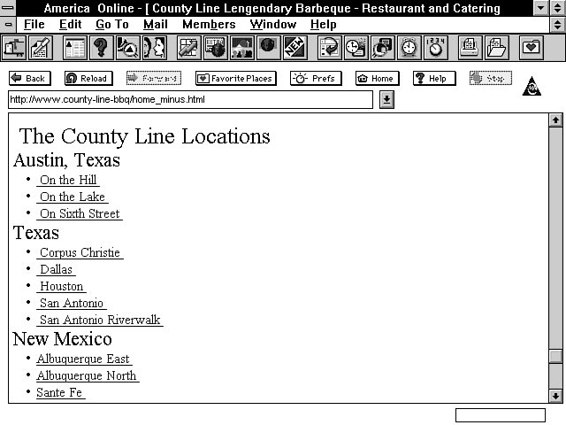

1. HTML 1.0
최초 HTML의 등장
전 세계에 처음으로 나타난 HTML 버전이다. 이 당시에는 웹 페이지 제작을 하는 사람들이 매우 드물었고, 웹을 이용하는 사람도 상당히 적은 시대였다. 주로 텍스트 위주의 정보 전달 목적으로 사용되었던 시기이다.
2. WWW(World Wide Web)
웹 표준을 정의하다
HTML의 사용자가 증가함에 따라 서서히 표준화를 해야 할 필요성을 느끼고, 팀 버너스리를 중심으로 각종 기관들이 모여서 웹의 표준을 정의하여 표준화를 시작했다.